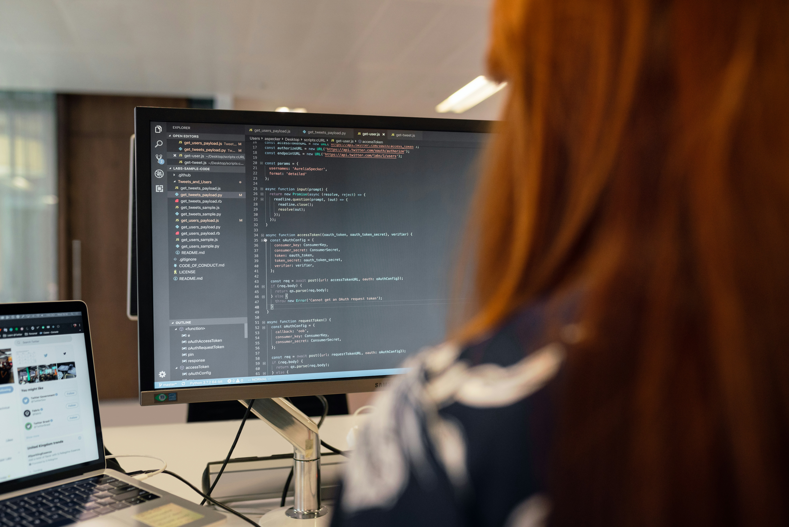
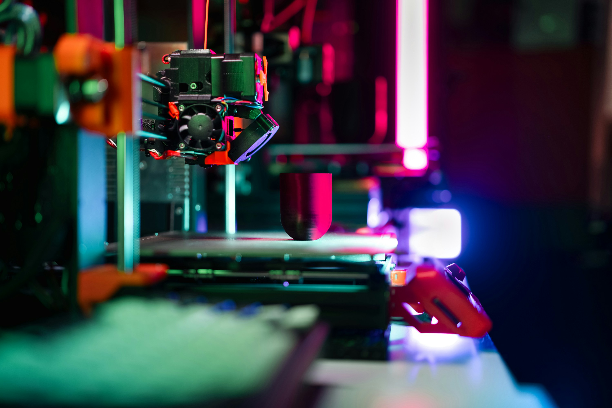
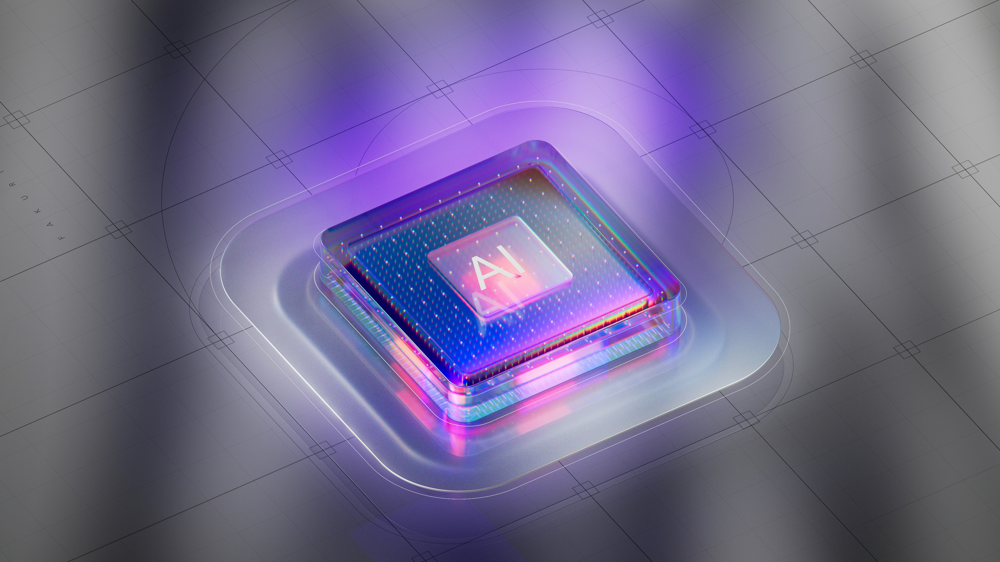
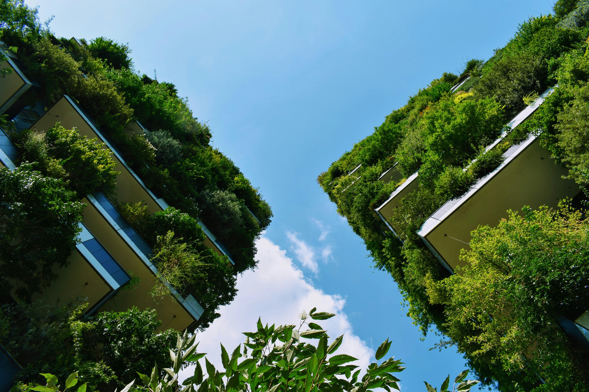
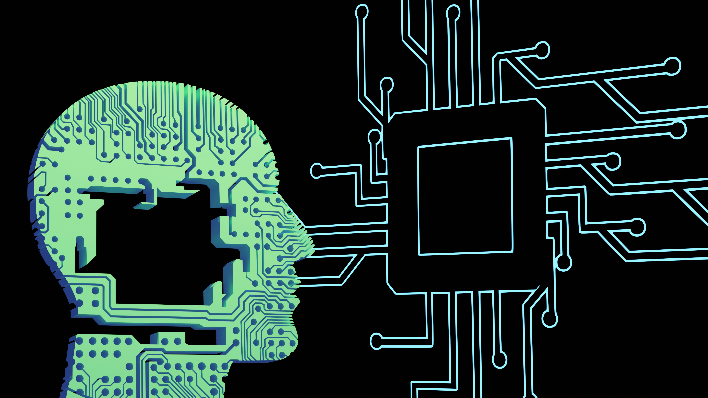

TECNOLOGIA QUE TRANSFORMA
-
-

Robótica
-

Inteligencia Artificial
-

Sustentabilidade
-
Jogos
-

Avanços da Técnologia
- 7:00 às 8:40 - Lógica de Programação
- 8:50 às 9:30 - Robótica
- 9:40 às 10:20 - Inteligência Artificial
- 10:30 às 10:55 - Sustentabilidade
- 11:05 às 11:45 - Jogos
- 11:50 às 12:40 - Avanços da Técnologia
SOBRE O EVENTO
Nosso evento de apresentações de Tecnologia tem como objetivo compartilhar conhecimentos, despertar a curiosidade e explorar as inovações que estão transformando o mundo. Será um momento de aprendizado, criatividade e troca de experiências, no qual os participantes poderão conhecer diferentes áreas da tecnologia e descobrir como elas estão presentes em nosso cotidiano. Durante o evento, serão apresentados temas como Lógica de Programação, Robótica, Inteligência Artificial, Sustentabilidade, Jogos e Avanços da Tecnologia, abordando conceitos, aplicações práticas e possibilidades para o futuro. Mais do que apresentar conhecimentos, queremos incentivar a criatividade, o pensamento crítico, a inovação e o interesse pela tecnologia, mostrando como ela pode ser utilizada para solucionar problemas, criar oportunidades e construir um futuro melhor. Venha conhecer, aprender e se inspirar com o universo da tecnologia!